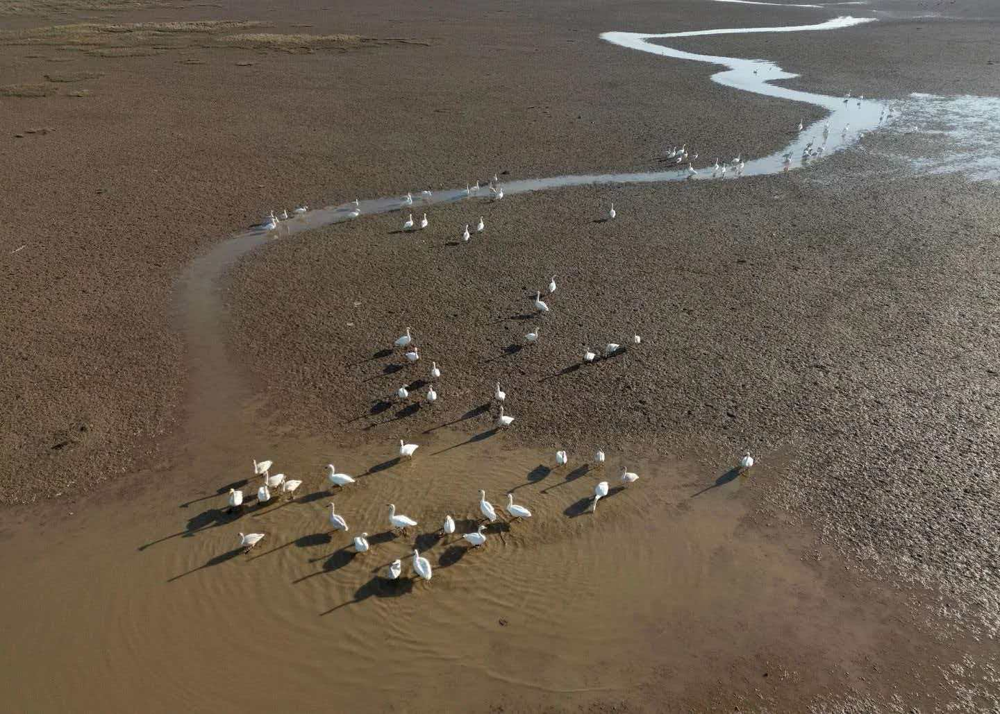

守护候鸟，我们在一起行动
鄱阳湖候鸟面临着多重威胁。一是栖息地萎缩——围湖造田、水产养殖、城市扩张导致湿地面积减少。二是水文节律改变——长江上游水库蓄水导致鄱阳湖枯水期提前、水位过低。三是人为干扰——非法捕猎、过度捕捞、旅游开发等。四是气候变化——极端天气事件频发，影响候鸟迁徙和越冬。保护鄱阳湖候鸟，刻不容缓。

1983年，江西省建立了鄱阳湖候鸟自然保护区，2013年升级为国家级自然保护区。保护区面积达224平方公里，涵盖九个子湖泊。保护区实施了湿地生态补偿、退田还湖、禁渔期制度等政策。每年冬季，保护区工作人员开展候鸟种群监测、栖息地巡护和伤病候鸟救助工作。此外，世界自然基金会（WWF）、国际鹤类基金会（ICF）等国际组织也在鄱阳湖开展了大量保护项目。
向身边人宣传候鸟保护知识，让更多人了解鄱阳湖候鸟的珍贵价值。
不购买、不食用野生候鸟及其制品，切断非法捕猎的利益链条。
观鸟时保持距离，不使用无人机干扰候鸟，不破坏湿地植被。
参与候鸟保护志愿活动，为保护区贡献力量。